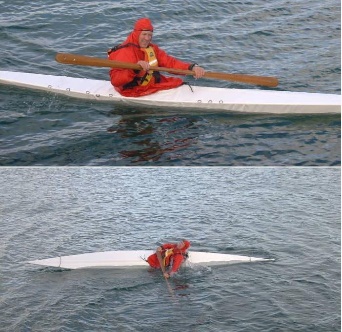

| (New) Sea Raider LC by Pete Notman (NZ) | Menu Previous Page Next Page |
|

Pete Notman from Wellington, New Zealand paddling / rolling his newly completed Sea Raider LC (518 X 51cm). Pete is using an aluminum / PVC sleeve coaming that is integral to the skin along with a forward deck zipper.
|
|